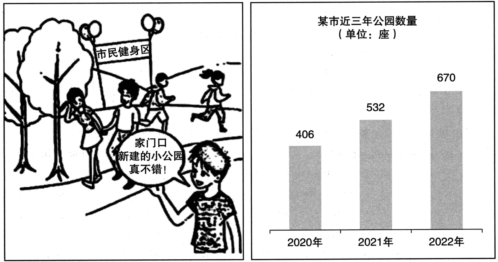

A小作文 · 回信给留学生 Paul：怎么准备一场讲「中国古代科学家」的课堂口头报告（10 分）
Read the following email from an international student and write a reply.
I’ve got a class assignment to make an oral report on an ancient Chinese scientist, but I’m not sure how to prepare for it. Can you give me some advice? Thank you for your help.
Yours,
Paul
Do not use your own name in your email; use “Li Ming” instead. (10 points)
💭 审题三件事
- ⭐⭐⭐ 先问：他是谁、他卡在哪。他是留学生（international student）⟹ 中文不是母语；题目是中国古代科学家 ⟹ 原始材料多是文言文。⟹ 他最大的坎不是「不会做报告」，是「材料读不懂」：建议给他英文资料（如李约瑟《中国的科学与文明》），并主动帮他看中文材料——这一条只有回给「这个人」才成立，2021 那条「建议要对准读者身上的词」原样适用。
- ⭐⭐ 再按「准备」的先后排三步：选人 → 找材料 → 搭讲稿并排练。他说 not sure how to prepare，步骤顺序本身就是回答。每一步落到能照着做：选谁（给一个具体的名字）、去哪找（给一本书）、讲几点（两三项成就 ＋ 配图 ＋ 计时出声排练）。
- ⭐ oral report ⟹ 建议要对着「讲」，不是对着「写」。听众是同班同学（class assignment）、有时间限制 ⟹ 选有故事、听得懂的人，配图，出声计时练。❌ Write a well-organized paper with an introduction, body and conclusion.（那是论文，不是口头报告）
⭐⭐ 十八年 Part A：2024 是第一次「把来信整封给你」
| 年份 | 体裁 | 读者是谁 | 第一句怎么起 | 落款 | 本年特有的坑 |
|---|---|---|---|---|---|
| 2007 | 建议信 | 校图书馆（机构） | I am writing to put forward several suggestions … | Li Ming | 建议只有口号没有可执行动作；写成投诉信 |
| 2008 | 道歉信 | 具名熟人 Bob | I am writing to apologize for … | Li Ming | 只道歉不给方案；方案没有「动作＋方式＋时间」 |
| 2009 | 致编辑信 | 报社编辑 | I am writing to express my concern about … | Li Ming | 建议里没有一条是编辑自己能办的 |
| 2010 | 通知 NOTICE （招募） | 一群人（无称呼） | Volunteers are needed for … | 机构名（题干给） | 写 Dear ＝ 体裁错；落款签 Li Ming |
| 2011 | 推荐信 · 荐物 | 未具名的一个朋友 | How have you been? I am writing to recommend … | Li Ming | 写成影评／剧透结局；通篇只有「我」没有「你」 |
| 2012 | 欢迎邮件 （以组织名义） | 一群国际学生 但仍是书信 | On behalf of the Students’ Union, I would like to extend a warm welcome to … | Li Ming ＋ Students’ Union | 按 2010 的手感写成通知；通篇 I 没有 we |
| 2013 | 邀请邮件 （担任角色） | 本校外教 | As chair of the English Club, I am writing to invite you to … | Li Ming | 只邀请、不交代工作量；没给答复期限 |
| 2014 | 建议信（撞 2007） | 本校校长 | As a third-year student, I am writing to suggest … | Li Ming | 建议写成对学生的劝告；用 should 下指令 |
| 2015 | 荐书邮件（撞 2011） | 读书会的一群会员 | As host of next Friday’s reading session, I would like to recommend … | Li Ming | 理由不对着读书会用途；剧透 |
| 2016 | 通知 NOTICE （告知 · 撞 2010） | 刚入学的国际学生（撞 2012） | Welcome to the University Library! To help all newly-enrolled international students … | Li Ming | 按 2012 写成欢迎信；信息写成广告 |
| 2017 | 推荐邮件 · 荐地方 （撞 2011／2015） | 具名的新到外籍教授 | Welcome to our city! Now that you have settled in, I would like to recommend … | Li Ming | 理由对谁都成立；推他家门口就有的；Dear James |
| 2018 | 邀请邮件 · 请出席 （撞 2013） | 全校国际专家（一群人） | On behalf of the Students’ Union, I am writing to invite you to this year’s graduation ceremony. | Li Ming | 时间地点写成「下个月」「在学校」；漏了为什么请您；称呼写成单数 |
| 2019 | 答复邮件 · 回复咨询 （十三年第一次） | 一位国际学生志愿者 | Thank you for your email about the “Aiding Rural Primary Schools” project. | Li Ming | 不回应来信就开讲；角色反了；忘了他是外国人 |
| 2020 | 通知 NOTICE · 活动 （撞 2010／2016） | 全体国际学生（上台的 ＋ 来听的） | To welcome the New Year, the Student Union will hold a singing contest for all international students … | Student Union （题干没给，自己推） | 手顺签了 Li Ming；只招选手忘了观众；没说唱什么语言 |
| 2021 | 建议邮件 · 给朋友本人 （撞 2007／2014） | 一个外国朋友（应届 · him/her 自起名） | Congratulations on your graduation! I am glad you are thinking of starting your career in China … | Li Ming | 建议对谁都成立、没用上「刚毕业」；写成「欢迎你来」的介绍 |
| 2022 | 邀请邮件 （带队参赛） | 英国大学的教授 | On behalf of …, I am writing to invite you to … | Li Ming | 漏时间/地点/事由 |
| 2023 | ⭐⭐ 通知 NOTICE · 招募 （撞 2010，隔十三年） | 全校学生（无称呼）· 招的是一个人 | Prof. Smith’s research team is looking for one student assistant for its project on campus sports activities. | Li Ming ＋ 自补一行身份 | ⭐⭐⭐ 把「研究体育活动」读成「组织体育活动」（职责写成办比赛、当裁判）；⭐⭐ 要求写成「体育好」；职责、要求只写形容词不 specify；写 Dear；招成复数 volunteers |
| 2024 本题 | ⭐⭐⭐ 回信 · 来信求建议 （来信原文印在题干里） | 留学生 Paul（来信署名） | What a great topic for a report! Here are a few tips that may help. | Li Ming | ⭐⭐⭐ 漏了「留学生」这道筛子（建议对中国学生也成立：多查资料、多练习）；⭐⭐ 写成科学家介绍（一句「怎么准备」都没有）；写成写论文的建议；不接他的信（开头公函腔、结尾不回谢谢） |
- ⭐⭐⭐ Directions 的信息量越来越少、来信的信息量越来越多：2023 题干用祈使句点名 duties and requirements；2024 题干只剩一句 Read … and write a reply，要点全靠你从信里读出来。⟹ 小作文开始考阅读：信里每个名词都是一道筛子。
- ⭐⭐ 2019 ↔ 2021 ↔ 2024：2019 对方先开口（回答咨询），2021 建议由读者本人去做（外国朋友找工作），2024 两样同时成立：Paul 先来信，建议由他自己去做。⟹ 两年的纪律叠在一起：第一句先接住来信（2019）· 每条建议都对准他身上的词（2021）。
- ⭐⭐ 外国读者十八年里第十一次（2008 加拿大房东 · 2012 · 2013 · 2016 · 2017 · 2018 · 2019 · 2020 · 2021 · 2022 · 2024；2016–2022 连着七年，2023 读者是全校学生、断了一年）——这么多年一直在考同一件事：你写的东西对一个外国人是否真有用。2016 要说外文书在哪、2020 要说用什么语言唱，2024 要说中文材料怎么办。
- ⭐ 落款回到最普通的 Li Ming：他信末写 Yours, ⟹ 你回 Yours,；不用补身份（朋友之间的回信，不需要资格）。
⭐⭐⭐ 来信逐句接住：他写了几句，你就回应几件事（本页新增）
以前的题干是一句转述，2024 第一次有一封信可以逐句对。回信的骨架就是把他的信倒过来读一遍：他说的每一句，你的回信里都要有一处接住它。
| Paul 写了什么 | 它在暗示什么 | 范文哪一句接住 |
|---|---|---|
| I’ve got a class assignment to make an oral report | ⭐ 听众是同学、有时间限制、是说不是写 | pick one scientist with a story your classmates can follow · rehearse it aloud within the time limit |
| on an ancient Chinese scientist | ⭐⭐ an ＝ 还没定是谁 ⟹ 第一步是帮他选；ancient ⟹ 史料是文言文 | Zhang Heng … would be a good choice. · since most old records are in classical Chinese, |
| but I’m not sure how to prepare for it | ⭐⭐⭐ 他要的是步骤，不是鼓励 ⟹ 按准备的先后排 | First, … Second, … Third, … |
| Can you give me some advice? | 全信唯一的请求 ⟹ 开头就答应 | Here are a few tips that may help. |
| Thank you for your help. | ⭐ 礼尚往来 ⟹ 结尾回一句 | I’m always glad to help. |
| （信头）from an international student | ⭐⭐⭐ 信里没写、题干写了：他读不了文言文 | start with English sources … · If any Chinese material confuses you, just send it to me. |
- ⭐⭐⭐ Paul 的信里没说自己是外国人——是 Directions 那句 from an international student 告诉你的。只读信、不读题干的人会漏掉它，写出来的建议对任何一个中国学生都成立（多查资料、多练习、做 PPT）。
- ⭐⭐ 「留学生 × 中国古代」叠在一起才出问题：讲现代科学家，英文资料遍地都是；讲古代，原始记载多是文言文。⟹ 两道筛子交叉的地方，就是这封回信最值钱的一句（start with English sources … ／ just send it to me）。
🧩 筛子表：来信里的五道筛子（本页新增）
2021 五道筛子挂在读者身上、2023 挂在课题名上，2024 挂在来信里：留学生 · 课堂作业 · 口头报告 · 中国古代科学家 · 不知道怎么准备。过得越多越值钱，一道都不过的删掉。
| 候选建议 | 留学生 | 课堂作业 | 口头 | 古代科学家 | 怎么准备 | 写不写 · 本文写成了哪一句 |
|---|---|---|---|---|---|---|
| ⭐⭐⭐ 先读英文资料，中文材料我帮你 | ✅✅ | — | — | ✅✅ | ✅ | since most old records are in classical Chinese, start with English sources such as … · If any Chinese material confuses you, just send it to me. |
| ⭐⭐ 选一个有故事、同学听得懂的人（给出名字） | ✅（替他选） | ✅（听众） | ✅ | ✅✅ | ✅（第一步） | pick one scientist with a story your classmates can follow. Zhang Heng, … would be a good choice. |
| ⭐⭐ 讲两三项成就 ＋ 配图 ＋ 出声计时排练 | — | ✅（时限） | ✅✅ | ✅ | ✅ | build your talk around two or three of his achievements, show pictures of them, and rehearse it aloud within the time limit. |
| 可以去博物馆看实物／复原模型 | ✅ | — | ✅（可拍照） | ✅ | ✅ | 备选：字数够就写一句；但「哪座博物馆有」你没把握就别写馆名（没把握的事实不写） |
| 多查资料、认真准备 | — | — | — | — | △ | ❌ 对任何人、任何作业都成立：五道筛子只擦边过一道 |
| 要自信、别紧张 | — | — | ✅ | — | — | ❌ 只过一道；他问的是「怎么准备」，不是「怎么不紧张」 |
| 介绍四大发明、列一串科学家 | — | — | — | ✅ | ✗ | ❌ 看着对题，其实替他写了报告：他要的是方法，不是内容 |
| 文章要有开头、主体、结尾 | — | ✅ | ✗ | — | ✅ | ❌ 把 oral report 当成了 paper |
- ⭐⭐ 给一个具体的名字：张衡（候风地动仪，公元 132 年献给东汉朝廷）——有实物故事、有图可配，正适合讲给同学听。⚠️ 地动仪没有实物留存、内部构造至今有争议 ⟹ 范文写 is said to have built（据说造了），不写成铁板事实；这一层争议本身就是报告里一个好的「钩子」。备选：祖冲之（把圆周率算到小数点后七位）——数字稳，但不如地动仪好讲、好配图。
- ⭐⭐ 给一本书：李约瑟（Joseph Needham）《中国的科学与文明》（Science and Civilisation in China，剑桥大学出版社，1954 年起出版）——英国人写给西方读者的中国科技史，正好对上「留学生」。⚠️ 拼法是英式 Civilisation；考场上记不准书名，就写 English books on the history of Chinese science，宁可泛一点，别编一个书名。
- ⭐ 结尾的帮忙要具体：If any Chinese material confuses you, just send it to me.——帮的正是第一道筛子卡住的地方；❌ If you need any help, please let me know.（对谁都成立）。
- ⚠️ 别替他写报告：张衡只当「选谁」的例子，不展开讲地动仪怎么工作——那是 Paul 自己要讲的内容，你的信只管「怎么准备」。
✍️ 范文（ 词 · 🟡 亮点点击看讲解）
Dear Paul,
接信 ＋ 答应What a great topic for a report! Here are a few tips that may help.
三步建议First, pick one scientist with a story your classmates can follow. Zhang Heng, who is said to have built an earthquake detector nearly 2,000 years ago, would be a good choice. Second, since most old records are in classical Chinese, start with English sources such as Joseph Needham’s Science and Civilisation in China. Third, build your talk around two or three of his achievements, show pictures of them, and rehearse it aloud within the time limit.
帮忙 ＋ 回谢If any Chinese material confuses you, just send it to me. I’m always glad to help.
Yours,
Li Ming
这个报告题目真不错！下面几点建议，也许用得上。
第一，挑一位有故事、同学们听得明白的科学家。张衡就是个好选择——据说他在近两千年前造出了一台测地震的仪器。第二，古代的记载大多是文言文，所以先从英文资料读起，比如李约瑟的《中国的科学与文明》。第三，围绕他的两三项成就来搭讲稿，配上图片，并在规定时间内出声排练。
哪份中文材料看不懂，直接发给我就行。随时乐意帮忙。
你的朋友
李明
- ⭐⭐⭐ 要点漏了「留学生」：建议写成「多查资料、做 PPT、多练习」——对中国学生也一字不差地成立。✅ 至少一条对着「中文材料他读不了」（英文资料 ／ 我帮你看）。
- ⭐⭐⭐ 要点写成科学家介绍：Ancient China had many great scientists. For example, Zu Chongzhi … Zhang Heng … 他问的是「怎么准备」，一封信全在讲内容，等于没回答。
- ⭐⭐ 要点只鼓励不给步骤：Don’t worry. I’m sure you will do well. ✅ not sure how to prepare ⟹ First / Second / Third 按准备的先后。
- ⭐⭐ 要点把 oral report 写成 paper：要有清楚的结构、引用文献、注意语法。✅ 对着「讲」：同学听得懂 · 配图 · 出声计时练。
- ⭐ 体裁不接他的信：开头 I am writing to give you some advice（像回陌生人）、结尾 Best wishes 就收。✅ 开头接住题目和请求，结尾回他的「谢谢」。
- ⭐ 事实把有争议的说成铁板：Zhang Heng invented the world’s first seismograph, which could predict earthquakes.（predict 错了——地动仪据载是测远处已发生的地震，不是预测）✅ is said to have built an earthquake detector。
- ⭐ 落款签真名（判零风险）· 称呼写 Dear Mr. Paul（Paul 是名不是姓）。✅ Dear Paul, … Yours, Li Ming。
- 语言❌ make a report about … · ❌ give you some advices · ❌ search materials · ❌ practice it loudly · ❌ in the limited time ⟹ ✅ a report on … · some advice（不可数）· look for / search for materials · rehearse it aloud · within the time limit。
- 字数about 100 words：95–115 最稳。本文 词（不含称呼与落款）。
- ⭐⭐ 第一句接住他的信：What a great topic for a report!——感叹句先肯定他手上的作业，朋友语气；不写 I am writing to（那是给陌生人的公函开头）。
- ⭐ 第二句答应请求：Here are a few tips that may help.——tips（可数）避开 advice 的单复数坑；may help 留分寸。
- ⭐⭐ First 选人：pick one scientist with a story your classmates can follow.——one 对上他信里的 an；your classmates 对上 class assignment；follow（听得懂、跟得上）对上 oral。
- ⭐⭐ 给一个名字、留一点分寸：Zhang Heng, who is said to have built an earthquake detector nearly 2,000 years ago,——be said to have done（据说做过）＝ 完成式不定式；nearly 2,000 years ago（公元 132 年，约一千九百年前）。
- ⭐⭐⭐ Second 就是这封信的命门：since most old records are in classical Chinese, start with English sources such as …——since 引出只有他才有的坎；classical Chinese ＝ 文言文；such as ＋ 一本具体的书。
- ⭐ Third 三个动作一句排完：build your talk around … , show pictures of them, and rehearse it aloud within the time limit.——build … around（以……为中心组织）· rehearse aloud（出声排练）· within the time limit（在规定时间内）。
- ⭐⭐ 收尾的帮忙对准第一道筛子：If any Chinese material confuses you, just send it to me.——material 不可数，any 后用单数；just 让语气轻。
- ⭐ 回他的「谢谢」：I’m always glad to help.——对上 Thank you for your help.；Yours, 对上他信末的 Yours,。
B大作文 · 图 ＋ 表作文（20 分）
Write an essay based on the picture and the chart below. In your essay, you should
1) describe the picture and the chart briefly,
2) interpret the implied meaning, and
3) give your comments.
Write your answer in 160–200 words on the ANSWER SHEET. (20 points)

- ⭐⭐⭐ 左图右表——英语（一）大作文十八年第一次有图表（2007–2023 全是漫画）；Directions 也第一次写 the picture and the chart，第一条要求是 describe the picture and the chart briefly ⟹ 两样都要描，缺一样就缺一个采分点。
- 左图：两根挂气球的杆子拉着横幅「市民健身区」；两棵树；一男一女手拉手散步，后面两三个人在跑步；右下角前景一位年轻人笑着抬手（像在向人介绍身后这片地方），对话框尾巴指着他：「家门口新建的小公园真不错！」
- 右表：标题「某市近三年公园数量（单位：座）」；2020 年 406 · 2021 年 532 · 2022 年 670，柱子逐年升高。
- ⭐⭐ 没有图注——2021–2024 连续四年；图上的字只有一句话、一块牌子、一个图表标题 ⟹ 论点还是只能从那一句话里抽（2023 的打法：拆成分、逐个找证据），只是证据这回有一半在图表上。
- ⚠️ 图上没有的东西别补：没有雾霾、没有工厂、没有「空气变好了」（看不出环保）；没有政府、没有政策文件（看不出原因）；图表只到 2022（没有预测）；「某市」是一座城，不是「全国」「我们的城市」。
💭 审题：一张图一张表，是同一件事的两个尺度
- 先看到题材：公园 ＋ 树 ＋ 跑步 ⟹ 城市建设、全民健身、绿化环保、民生。这一步人人都能看到——可它只给了话题。回到那句话：他没说「环境好了」，他说的是「家门口 · 新建的 · 小公园」。
- ⭐⭐⭐ 再把图和表对起来：表在数（一座城、三年、几百座），图里的人在说一座（一个人、家门口、一小块）。⟹ 表是城市的账，图是这本账落到一个人身上是什么样。他那句话里的三个修饰语，每一个都对着表上的一件事：新建的 ↔ 柱子在长；小 ↔ 一年新增 120 多座为什么做得到；家门口 ↔ 这个数为什么值得高兴。
- ⭐⭐ 再想「小」和「家门口」为什么是题眼。图表的单位是座，不是面积——它数的是「有几处」，不是「有多大」。一座城一年新开 120 多座大公园做不到，小公园能（插进楼与楼之间的空地）；而对住在旁边的人来说，一座走得到的小公园，比一座要坐车去的大公园有用。⟹ 第二段写「多是因为小，多之所以好是因为近」。
- 「家门口新建的小公园真不错！」✅ “The new small park right on my doorstep is really nice!” ／ “The newly built little park near my home is great!”
- ⚠️ 「家门口」≠ at my door：at my door 是「在我门上／门口站着」；「家门口」是离家很近 ⟹ on my doorstep ／ right next to my home ／ just round the corner。❌ in front of my family door（字对字）
- ⚠️ 「新建的」⟹ new ／ newly built（newly 修饰过去分词）；❌ new-built · ❌ newly-build。「真不错」⟹ really nice ／ great，❌ really not bad（字对字，英语里语气反而变弱）。
- 牌子「市民健身区」 ⟹ “Fitness Area for Citizens” ／ “Residents’ Fitness Zone”；描图时用 a sign reading “…” 引出。❌ city people body-building area
- 图表标题「某市近三年公园数量（单位：座）」 ⟹ the number of parks in one city over three years；「某市」⟹ one city ／ a certain city，❌ our city · ❌ China；「座」不用译，数字后直接接 parks 或不接。
- 没有图注 ⟹ 第一句别编标题：❌ As is shown in the picture entitled “Parks Near Home” …
📐 描图段三看（本图版 · 左图右表、一人开口、无图注）
| 看什么 | 本图看出来的 | 写进文章的哪一句 |
|---|---|---|
| ① 看图上的字 | 一句话（尾巴指着年轻人）＋ 一块牌子「市民健身区」；没有图注 | past a sign reading “Fitness Area for Citizens”, … “The new small park right on my doorstep is really nice!” |
| ② 看图表 | ⭐⭐ 起点 ＋ 中间 ＋ 终点三个数都给（只有三根柱子，全写也就一句）；标题里的「某市」要带上 | The chart shows that the number of parks in one city rose from 406 in 2020 to 532 in 2021 and 670 in 2022. |
| ③ 看人 | ⭐ 人在动：散步、跑步——用公园，不是看公园；说话的人笑着 | people stroll and jog past … , and a young man says with a smile, |
📊 图表怎么读：三问，各问出一个坑（本页新增）
英语（二）年年考图表，英语（一）这是第一次——数字不多，但每个数字都能读错。动笔前在草稿纸上先算三个数：增量 · 增速 · 总倍数。
| 问什么 | 算出来 | ✅ 可以写 | ❌ 写了就错 |
|---|---|---|---|
| ⭐⭐ 量的是什么？ | 标题「公园数量」、单位「座」——数的是几处，不是多大 | the number of parks | green space doubled · park area grew（图表没给面积） |
| ⭐⭐ 是谁的？ | 「某市」——一座城市 | in one city ／ in a certain city | in China · across the country · in our city（全称、还把自己搬进去了） |
| ⭐⭐⭐ 怎么变？ | 增量：+126（2021）→ +138（2022），在变大；增速：31.0% → 25.9%，在变小；两年合计 +264，约 +65%（1.65 倍） | rose steadily · by more than 120 parks a year · by about 65% in two years | doubled（只有 1.65 倍）· rose faster and faster（增量对、增速错，说不清就别说）· skyrocketed（夸张） |
- ⭐⭐ 406 → 532 → 670：每年多出来的座数从 126 涨到 138，可每年的百分比从 31.0% 降到 25.9%（基数变大了）。⟹ 写 ❌ The number grew faster and faster. 有一半的读法是错的；拿不准就写绝对数：more than 120 parks were added each year——126、138 都对得上，一个字都不用辩。
- ⭐ 描图段的数字三个全写：只有三根柱子，from 406 in 2020 to 532 in 2021 and 670 in 2022 一句就完；别只写首尾（中间那根是「稳步」的证据），也别在第一段就算百分比（计算留给第二段当论据用）。
- ⚠️ 单位「座」是第二段的伏笔：数的是「几处」⟹ 小公园最能把这个数推上去——这正是年轻人那句话里「小」的分量。
⭐⭐⭐ 一句话拆成分：三个修饰语，各对图表一件事（本页新增）
2023 只有一句话，打法是拆成分、回画面找证据；2024 还是一句话，但证据有一半挪到了图表上——拆出来的成分，回图表核一遍。
| 成分 | 原话 | 在图 ／ 表上的证据 | 写进文章的哪一句 |
|---|---|---|---|
| 评价 | 真不错 | 他在笑；周围的人在散步、跑步 | really nice! · says with a smile |
| ⭐⭐ 时间 | 新建的 | ⭐ 表：柱子三年在长——他家门口那座，就是这几百座新增里的一座 | “New” matches the rising bars: more than 120 parks were added each year. |
| ⭐⭐⭐ 规模 | 小 | ⭐⭐ 表：单位是「座」、一年新增 120 多座 ⟹ 只有小公园能长这么快；图：画面里只有两棵树、一条小路、一块牌子 | “Small” explains how: few cities could open so many large parks, but small ones fit between buildings. |
| ⭐⭐⭐ 位置 | 家门口 | ⭐⭐ 图：人是走来、跑来的，不是坐车来的 ⟹ 走得到，这个数才对他有意义 | “On my doorstep” explains why the number matters: a park counts in daily life only when people can walk to it. |
| 用途 | （牌子）市民健身区 | 给市民、用来动——不是用来看的风景 | past a sign reading “Fitness Area for Citizens” |
| 没说出口的 | 为什么公园越建越多（图上没画政府、没画政策）· 以后会怎样（图表只到 2022） | ⚠️ 这两样别替图说：原因只能放第三段、用 may；不写预测 | |
- ⭐⭐ 一个解释「怎么做到的」，一个解释「为什么值得」：「小」回答柱子凭什么长这么快，「家门口」回答柱子长了有什么用。两个合起来就是第二段的骨架：多是因为小，好是因为近。
- ⭐⭐ 出题人为什么非要配一张表：只有漫画，「家门口新建了个小公园」是一个人的运气；配上 406 → 670，它成了一座城的趋势。⟹ 表把一句话从个案升成趋势，那句话把一张表从数字落成生活——两样缺一样，第二段都写不出来。
- ⭐ 「新建的」最容易写、也最不值钱：它只是把柱子在长又说一遍；真正要拆的是「小」和「家门口」——这两个词表上没有，要你自己对过去。
🧩 图上字的语法结构，决定文章的论证结构（十六型扩到十七型：新增「一句评价 ＋ 三个修饰语，配一张柱状图，无图注」）
| 年份 | 图上的字是什么结构 | 文章就得怎么搭 |
|---|---|---|
| 2007 | 无字，只有两个想象气泡 | 靠对比两个气泡立意 |
| 2008 | 因果句：你一条腿，我一条腿；你我一起，走南闯北 | 顺着因果推。单线论证 |
| 2009 | 对举短语（同一主语 ＋ 两个形容词）：网络的“近”与“远” | 两边都写，还要回答为什么同一个东西既近又远 |
| 2010 | 比喻式判断句：文化“火锅”：既美味又营养 | 先解喻，再分别落实两个并列谓语 |
| 2011 | 引号双关式短语：旅程之“余” | 破字 → 对照句 → 指认施动者 |
| 2012 | 两句对白（无图注）：全完了！／幸好还剩点儿。 | 转述 → 拿画面核对真假 → 看手 |
| 2013 | 一词图注 ＋ 并列标签：选择 ／ 求职·考研·出国·创业 | 全译 → 不排座次 → 追问谁来选 |
| 2014 | 两格时间标签 ＋ 一词图注：三十年前…… ／ 现在…… ／ 相携 | 两格同构描 → 列变与不变 → 在两格之间解图注 |
| 2015 | 偏正短语：手机时代的聚会 | 写中心语，拆开看哪一半还在，矛头别指定语 |
| 2016 | 取舍复句：与其只提要求，不如做个榜样 | 两分句各配一格 → 第二段写机制 → 第三段解限定副词「只」 |
| 2017 | 一字之差的动宾对举：“有书”与“读书” | 两个短语各配一格 → 盯住被换掉的动词 → 末段把两个动词收拢 |
| 2018 | 进行时图注 ＋ 两张三条的清单：选课进行时 ／ 知识新·重创新·有难度…… ／ 给分高·易通过·作业少…… | 两张清单全译 → 摆到同一把尺子上找唯一交锋项 → 第三段对着「进行时」说话 |
| 2019 | 一答一劝的对白 ＋ 两字时段图注：累了，我不爬了。／别呀！休息一下再接着爬。／途中 | 两句全译 → 看第二句让了什么步、不让的是哪一个字 → 第三段对着「途中」说话 |
| 2020 | 两格各一句条件紧缩句 ＋ 一词抽象名词图注：尽早完成才放心 ／ 不到最后不动手 ／ 习惯 | 两句全译、条件别丢 → 先拆出同一个骨架，再看骨架里换掉的词 → 第三段对着图注写「每一次」 |
| 2021 | 一句转述他人看法 ＋ 一句反问加判断的回答（无图注）：爸爸，很多同学觉得学唱戏不好玩。／你自己不是喜欢吗？那就足够了。 | 两句全译、反问别译成真疑问 → 逐词对齐找出被换掉的成分（评判者）→ 图上的结论只解释不复述 |
| 2022 | 两句并排对白 ＋ 海报标题（无图注）：不是我们专业的，听了也没多大用。／去听听肯定有好处。（与 2012 同型，不另计） | 转述两句对话并选边站 |
| 2023 | 一句感叹 ＋ 趋势判断（一人开口、说给长辈听，无图注）：真好啊，咱们村的龙舟赛越来越热闹了！ | ⭐ 三步走：① 整句译出（热闹 ≠ hot，越来越 ＝ 比较级叠用，咱们 ＝ our）；② ⭐⭐⭐ 拆成分、回画面找证据（热闹 ← 人群，越来越 ← 听话的老人）；③ ⭐⭐ 第二段写「趋势 ＋ 尺子」，原因图上没画 ⟹ 留到第三段、用 may |
| 2024 本题 | 一句评价 ＋ 三个修饰语（一人开口）、一块牌子，配一张柱状图（无图注）：家门口新建的小公园真不错！／市民健身区／某市近三年公园数量（单位：座） | ⭐ 三步走：① 整句译出 ＋ 三个数全写（家门口 ≠ at my door，某市 ≠ our city）；② ⭐⭐⭐ 修饰语逐个对图表（新建 ↔ 柱子 · 小 ↔ 增速与单位「座」· 家门口 ↔ 数字的意义）；③ ⭐⭐ 第二段写「多因为小、好因为近」，原因（政策）图上没画 ⟹ 留到第三段、用 may |
- ⭐⭐⭐ 2023 ↔ 2024：连续两年「一个人、一句话、无图注、趋势向好」——2023「越来越热闹」，证据是画面上挤满的人；2024「新建的」，证据是图表上长高的柱子。⟹ 证据从画面挪到了图表：2023 的「数人头」是比喻（热闹用人来量），2024 真的给了数。⚠️ 两年都考「别把原因写进寓意段」：2023 的乡村振兴、2024 的城市政策，图上都没画。
- ⭐⭐ 2012 · 2021 · 2022 · 2023 · 2024：没有图注的五年，而且 2021–2024 连续四年。⟹ 押「图注题」不如练「从一句话里抽论点」——2024 连图表都上了，还是没给图注。
- ⭐⭐ 2015 ↔ 2024：两年都画了「人和身边的东西」——2015 一桌人对着手机（东西把人隔开了），2024 一群人在家门口的公园里动起来（东西把人带出来了）。⟹ 主题不同，审法一样：看画里的人在拿这样东西做什么。
| 年份 | 现成联想 | 回画面查一遍 | 结论 |
|---|---|---|---|
| 2009 | 蛛网 ⟹ 陷阱 | 图里没有蜘蛛 | ❌ 联想错 |
| 2010 | 火锅 ⟹ 熔炉 | 每块料都还保留形状和名字 | ❌ 联想错 |
| 2011 | 河脏 ⟹ 工厂排污 | 图上没有工厂 | ❌ 联想错 |
| 2012 | 半杯水 ⟹ 乐观 vs 悲观 | 瓶里确实还剩、两人确实相反 | ✅ 成立，但少了那只手 |
| 2013 | 岔路口 ⟹ 选对那条路 | 四条路没被标出对错 | ⚠️ 半成立：隐含前提找不到 |
| 2014 | 子女扶老人 ⟹ 反哺／报恩 | 母亲在自己走、在笑 | ⚠️ 半成立：程度过了量 |
| 2015 | 低头族 ⟹ 手机有害 | 没有一个人痛苦，两个在笑 | ⚠️ 半成立：打错了靶 |
| 2016 | 「身教胜于言传 ⟹ 父母别说教」 | 右格要求还在，图注写的是「只」 | ✅ 成立，但删掉了「只」 |
| 2017 | 书架 ＋ 读书 ⟹ 「读书重质不重量」 | 右格报的正是一个数量目标 | ⚠️ 半成立：误伤正面格 |
| 2018 | 选课 ⟹ 「大学生功利，专挑水课」 | 图注是进行时，他还没选 | ⚠️ 半成立：抢了结局 |
| 2019 | 登山 ＋ 鼓励 ⟹ 「坚持就是胜利，不能半途而废」 | 劝人的那位自己先说「休息一下」；说不爬的人还坐在原地 | ⚠️ 半成立，一次踩两个旧坑（删字 ＋ 抢结局） |
| 2020 | 勤快 vs 拖延 ⟹ 「拖延症害人，今日事今日毕」 | 图注「习惯」管两格；「拖延」只说得了右格；图上没有结局 | ⚠️ 成立，但缩小了图注 |
| 2021 | 孙悟空 ＋ 唱戏 ⟹ 「弘扬传统文化，传承国粹」 | 父亲给的理由是「你自己喜欢」，不是「这是国粹」 | ⚠️ 布景成立，理由被换掉 |
| 2023 | 龙舟 ＋ 村子 ⟹ 「传统节日日渐冷清，亟需保护」 | ① 她说的是「越来越热闹」；② 两岸、桥上挤满了人，画面上没有一处冷清；③ 她是笑着说的 | ⚠️⚠️ 第九种结果：把趋势读反了——话题对、方向反：图说「在长」，模板说「在衰」 |
| 2024 本题 | 公园 ＋ 树 ⟹ 「城市绿化、改善空气、保护环境」 | ① 牌子写的是「市民健身区」；② 他夸的是「家门口」（近）；③ 画面上的人在散步、跑步，没有一个人在看风景；④ 图表数的是座数，不是绿化面积 | ⚠️⚠️ 第十种结果：换了好处——话题对、好处换了：图说「近、能动」，模板说「绿、空气好」 |
- ⭐⭐ 十五年里第十种结果：换了好处。2021 是换了理由（父亲说「你喜欢」，模板写「这是国粹」），2023 是读反了方向；2024 是同一件好事、换了它好在哪——公园当然也绿，但这幅图花笔墨的是「近」和「动」：一块健身区的牌子、一群跑着的人、一句「家门口」。⟹ 一段「公园是城市之肺」写下来，一个题眼都没碰到。
- ⭐⭐ 另一个现成联想「政府重视民生、经济发展了」——补了图上没画的原因：公园为什么越建越多，可能是城市在推「口袋公园」、在给老城区见缝插绿，但图上一样都没画。⟹ 可以写，只能放第三段、只能用 may／one likely reason（见一图三写 C）；当成第二段就是把猜测写成了图意（2023 的旧坑原样再考一遍）。
- ⭐⭐ 英语（二）图表模板「数据描述 → 三条原因 → 预测趋势」：这是英语（一）第一次出图表，最容易整套搬过来——三条原因图上一条都没有，预测图表只到 2022 也没有；英语（一）的 Directions 第二条还是 interpret the implied meaning，要的是图意，不是原因分析。
✍️ 范文（ 词 · 🟡 亮点点击看讲解）
①描图In the picture, people stroll and jog past a sign reading “Fitness Area for Citizens”, and a young man says with a smile, “The new small park right on my doorstep is really nice!” The chart shows that the number of parks in one city rose from 406 in 2020 to 532 in 2021 and 670 in 2022.
②寓意The two images tell one story at two scales. The chart counts parks; the young man tells us what one means. “New” matches the rising bars: more than 120 parks were added each year. “Small” explains how: few cities could open so many large parks, but small ones fit between buildings. “On my doorstep” explains why the number matters: a park counts in daily life only when people can walk to it.
③评论To be fair, a park counted on paper is not always a park in use; some are built where few people live. Still, the trend deserves applause. While grand parks get all the attention, it is the small ones nearby that change how people live, since most of us use the nearest one. A city should be judged not by how many parks it has, but by how few homes are far from one.
这一图一表讲的是同一件事的两个尺度。图表在数公园，那位年轻人告诉我们其中一座意味着什么。「新建的」对上了逐年长高的柱子：每年新增 120 多座。「小」解释了怎么做到的：很少有城市能一下开出这么多大公园，小公园却能插进楼与楼之间。「家门口」解释了这个数字为什么要紧：一座公园只有在人们走得到时，才算进了日常生活。
说句公道话，纸面上算了数的公园，不一定是有人用的公园；有些建在了人烟稀少的地方。不过，这个趋势仍值得叫好。大公园出尽风头，真正改变人们生活的却是身边的小公园，因为我们大多数人只去最近的那一座。衡量一座城市，不该看它有多少座公园，而该看有多少户人家离公园太远——越少越好。
🔁 一图三写：同一幅图，第三段的三个版本
前两段一个字不动，只换第三段——按 Directions 第 3 条的动词选版本。点一下卡片可以高亮对照。
- ⭐⭐⭐ 描图只描图不描表，或只描表不描图：Directions 第 1 条写的是 describe the picture and the chart ⟹ 两样缺一样就缺一个采分点；三个数全写，「某市」带上。
- ⭐⭐⭐ 立意换了好处：Parks are the lungs of a city. They clean the air and beautify the environment … 他夸的是「家门口」、牌子写的是「健身」——一个题眼都没碰。
- ⭐⭐ 立意把原因当寓意：The chart shows that the government attaches great importance to people’s well-being … 原因图上没画：可以写，只能放第三段、用 may。
- ⭐⭐ 立意整套搬英语（二）图表模板：数据描述 → There are three reasons … → It is predicted that the number will keep rising. 原因没画、预测没给；英语（一）要的是 implied meaning。
- ⭐⭐ 立意第二段只复述「公园多了、大家很开心」：The number of parks has increased, and people enjoy themselves. 「小」和「家门口」两个修饰语都没解释——描图段的话换个说法又说一遍。
- ⭐ 数据算错或说过头：doubled（只有 1.65 倍）· skyrocketed · grew faster and faster（增速其实在降）· in China（表上是「某市」）。
- ⭐ 描图编图注：The picture, entitled “Parks Near Home” … 2024 没有图注。
- 语言❌ the numbers of parks · ❌ increased from 406 to 670 parks in 2020 to 2022 · ❌ at my home door · ❌ do exercises in the park（可以，但 exercise 作「锻炼」不可数更自然）· ❌ more and more parks are built up ⟹ ✅ the number of parks · rose from 406 in 2020 to 670 in 2022 · on my doorstep · exercise / work out · more parks have been built。
- 字数160–200：185–198 最稳。本文 词。我的盲写稿 181（见 05+）——第一次落在区间正中，但第二段只有 49 词。
- ⭐ 没有图注就别编：In the picture, people stroll and jog past a sign reading “Fitness Area for Citizens”,——stroll and jog 两个动词写出「在用」；a sign reading “…”（写着……的牌子）把牌子上的字带进来。
- ⭐⭐ 引语整句译：“The new small park right on my doorstep is really nice!”——new · small · on my doorstep 三个修饰语一个不丢，第二段要逐个拆；right 加强「就在」。
- ⭐⭐ 图表一句写完：The chart shows that the number of parks in one city rose from 406 in 2020 to 532 in 2021 and 670 in 2022.——the number of（单数谓语）；in one city 对上「某市」；三个数全给，计算留给第二段。
- ⭐⭐⭐ 第二段第一句给出总判断：The two images tell one story at two scales.——at two scales（两个尺度）：一座城 vs 一个人。阅卷人一读就知道你把图和表接上了，不是各写各的。
- ⭐⭐ 分号对举：The chart counts parks; the young man tells us what one means.——counts（数）对 means（意味着）：数字 vs 意义。
- ⭐ 「新建的」用绝对数：“New” matches the rising bars: more than 120 parks were added each year.——126、138 都对得上；不说 faster and faster（增速其实在降）。
- ⭐⭐⭐ 「小」解释怎么做到：“Small” explains how: few cities could open so many large parks, but small ones fit between buildings.——few（几乎没有）守住分寸；fit between（塞得进……之间）。
- ⭐⭐⭐ 「家门口」解释为什么值得：“On my doorstep” explains why the number matters: a park counts in daily life only when people can walk to it.——count 第二次出现、换了意思（算数、有分量），和上面「图表在数」一词两用；only when 给出条件。
- ⭐ To be fair 先让一步：To be fair, a park counted on paper is not always a park in use; some are built where few people live.——on paper（纸面上）vs in use（在用）；some 守住分寸（2021 页的纪律：别写没有出处的全称）。
- ⭐⭐ 借 T1 的强调句对照：While grand parks get all the attention, it is the small ones nearby that change how people live,——while … get all the attention, it is … that … 的句架来自同卷 T1（见 05）：出风头的是大的，改变生活的是小的。
- ⭐ 借翻译的「最近的那一个」：since most of us use the nearest one.——同卷翻译里大象几乎总挑最近的水坑（见 05）；most of us 守住分寸，不说 everyone。
- ⭐⭐ 换一把尺子收尾：A city should be judged not by how many parks it has, but by how few homes are far from one.——be judged not by A but by B；how many 对 how few：从「数公园」换成「数离公园远的家」——把图表的尺子换成那句话的尺子。
03🩺 跑题诊断表（这幅图 ＋ 这张表最容易滑向的五个方向）
公园、树、跑步、柱状图——四样东西各连着一套背熟的话（绿化环保、全民健身、政府重视民生、英语二图表模板）。越熟越容易整段倒出来，却没对着他那句「家门口新建的小公园」。下面五条按「有多容易滑过去」排序，①②③是本图特有的：①换了好处，②搬了英语二模板，③只说了「多」。
| 跑向 | 长什么样 | 为什么错 | 回到正轨的那一句 |
|---|---|---|---|
| ① 写成「城市绿化、保护环境」 本图特有 | Parks are the lungs of a city. More parks mean cleaner air and a more beautiful environment … | ⚠️⚠️ 换了好处：牌子写「健身」、他夸「家门口」、人在跑在走——图说的是近和动，不是绿 | a park counts in daily life only when people can walk to it. |
| ② 搬英语（二）图表模板 本图特有 | Several factors contribute to this trend. First, the economy … Second, the government … It can be predicted that … | ⚠️⚠️ 原因与预测图上都没有：英语（一）第二条要的是 implied meaning，不是原因分析 | The two images tell one story at two scales. |
| ③ 第二段只说「公园多了、大家开心」 本图特有 | The number of parks has increased greatly, and people can enjoy themselves in them … | 复述不是解释：「小」（怎么做到）和「家门口」（为什么值得）两个修饰语都没碰 | “Small” explains how: … “On my doorstep” explains why the number matters: |
| ④ 写成「全民健身、增强体质」 | Physical exercise is vital to our health, so everyone should work out every day … | 只抓了牌子、丢了那句话：健身是公园的用途，但图表数的是公园、他夸的是位置；写成健身号召，图表就白给了 | The chart counts parks; the young man tells us what one means. |
| ⑤ 写成「城市化的代价、城市越来越挤」 | With rapid urbanization, cities are crowded, and people have little space to relax … | 把趋势读反了（2023 的旧坑）：表上是「越来越多」、他说的是「真不错」——图在报喜 | Still, the trend deserves applause. |
04🌏 图上的字怎么译 ＋ 图表描述 ／ 城市生活话题词块
本图最容易写成中式英语的是「家门口」「新建的」「真不错」「某市」「座」五处；图表部分最容易错的是 the number of 的单复数和年份介词。
| 中文 | ✅ 这样写 | ⚠️ 别这样写 |
|---|---|---|
| ⭐⭐ 家门口 | on my doorstep ／ right next to my home ／ just round the corner | at my door（在门上）· in front of my family door |
| ⭐⭐ 新建的小公园 | the new small park ／ the newly built little park | new-built · newly-build |
| ⭐ 真不错 | really nice ／ great | really not bad（语气反而变弱） |
| ⭐ 市民健身区 | Fitness Area for Citizens ／ Residents’ Fitness Zone | city people body-building area |
| ⭐⭐ 某市 · 公园数量 | the number of parks in one city（单数谓语 rose / has risen） | the numbers of parks · parks number · in China · in our city |
| ⭐⭐ 从 2020 年的 406 座增至 2022 年的 670 座 | rose from 406 in 2020 to 670 in 2022 | increased from 406 to 670 parks in 2020 to 2022 · increased to 406 to 670 |
| ⭐ 每年新增 120 多座 | more than 120 parks were added each year | increased more than 120 every year（缺 by） |
| ⭐ 两年增长约 65% | by about 65% in two years | doubled · skyrocketed（都说过头了） |
| 口袋公园 | “pocket parks”（加引号；只在第三段、只当可能的原因） | bag parks |
| 步行可达 | within walking distance ／ people can walk to it | can be reached by feet |
| 锻炼 | exercise（不可数）／ work out ／ stay fit | do sports exercises · body-build |
🧺 图表 ／ 城市生活话题词块（可迁移到「社区设施」「城市建设」「公共服务」「图 ＋ 表」类题目）
05素材联动 · 2024 本年六篇能喂这篇作文
⚠️ 翻译与大作文连续第十三年不撞题（翻译讲大象的空间导航），但最贴题眼的是 T1：Tim Harford 说改变世界的是廉价、不起眼的技术（一颗钉子），不是出尽风头的精巧发明——正好是「小公园」对「大公园」。T3（艺术家与 AI）借不上。⚠️ 同卷原文只引短语（每处不超过 13 词）；下面「可套」的英文全部是自拟的，只借句架。所引短语均已回本站 2024 各页核对。
05+🧪 盲写稿 vs 范文
写作没有标准答案可对，但可以拿本页自己列的坑去查自己的盲写稿。盲写稿先落盘（只看过原卷第 14 页，没看任何解析——本年精讲也确实没有范文），原文存 _讲义笔记/2024_作文_mine.txt；词数按本页脚本同一口径数。
| 项目 | 盲写稿 | 范文 | 结论 |
|---|---|---|---|
| A 开头 | I’m glad to hear from you, and I’d like to offer some advice on your report. | What a great topic for a report! Here are a few tips that may help. | ✅ 接住了来信、答应了请求；范文换成感叹句，先夸他的题目 |
| A 选人 | First, choose a scientist whose story you find exciting, such as Zhang Heng, who invented an instrument to detect earthquakes nearly 2,000 years ago. | First, pick one scientist with a story your classmates can follow. Zhang Heng, who is said to have built an earthquake detector … | ✅ 给了具体的名字；⚠️ 标准是「你觉得精彩」——范文换成「同学听得懂」（对上 class 与 oral）；⚠️ invented 写成了铁板事实（地动仪没有实物留存、构造有争议）⟹ is said to |
| A 找材料 | Next, collect materials from reliable sources like museum websites and books, and focus on two or three of his key achievements rather than his whole life. | Second, since most old records are in classical Chinese, start with English sources such as Joseph Needham’s Science and Civilisation in China. | ❌ 漏了最要紧的一道筛子：他是留学生——「博物馆网站和书」对中国学生一字不差地成立；中国古代科学家的原始材料是文言文，这一条没想到 |
| A 讲稿 · 排练 | Finally, make some slides with pictures of his inventions and practise speaking in front of friends. | Third, build your talk around two or three of his achievements, show pictures of them, and rehearse it aloud within the time limit. | ✅ 对着 oral report：配图、出声练；⚠️ 没提时间限制（class assignment 的暗示） |
| A 收尾 | If you need any books, I’m happy to lend you mine. Good luck with your report! | If any Chinese material confuses you, just send it to me. I’m always glad to help. | ⚠️ 借书给他——借的多半是中文书，他读不了：帮忙没对准他的坎；⚠️ 没回他的「谢谢」（Good luck 也行，但信里那句 Thank you 没接住） |
| A 词数 | 97 | 本页自动统计（见 A 节） | ✅ 在 95–115 之内（偏下） |
| B 描图 | The picture and the chart present a pleasant change in city life. In the picture, people are jogging, walking and chatting in a fitness area, … The chart shows that the number of parks in a city rose from 406 in 2020 to 532 in 2021 and then to 670 in 2022, an increase of about 65% in two years. | In the picture, people stroll and jog past a sign reading “Fitness Area for Citizens”, … The chart shows that the number of parks in one city rose from 406 in 2020 to 532 in 2021 and 670 in 2022. | ✅ 图和表都描了、三个数全写、the number of 单数、in a city 没写成全国；⚠️ 65% 在第一段就算掉了（计算该留给第二段当论据）；⚠️ 首句「愉快的变化」是结论、不是描述；描图段 68 词，超 55 一截 |
| B 第二段 | The implied meaning is clear: cities are paying more attention to people’s daily needs. Small parks built near homes allow residents to exercise and relax without travelling far. Such places not only improve people’s health but also bring neighbours together, … | The two images tell one story at two scales. … “Small” explains how … “On my doorstep” explains why the number matters … | ✅ 抓到了「近」（without travelling far），方向没读反；❌ 第一句「城市更重视民生」是猜动机——图上没画政府，正是诊断表 ② 的路子；⚠️ 「小」只当形容词用了，没拆出「怎么做到的」；图和表没接上（没说两样是一件事）；只有 49 词 |
| B 第三段 | In my opinion, this trend deserves our support. Green space is not a luxury but a basic part of a good life. Local governments should keep building parks in crowded areas … Meanwhile, citizens should protect these facilities … Only in this way can the parks truly make our lives happier. | To be fair, a park counted on paper is not always a park in use; … A city should be judged not by how many parks it has, but by how few homes are far from one. | ⚠️ Green space 滑向了「绿化」（诊断表 ① 的半步）；❌ 政府该做、市民该做两句是万能模板，换任何一道「设施」题都成立；没让步；末句 Only in this way 没收回题眼 |
| B 词数 | 181（68／49／64） | 本页自动统计（见 B 节） | ✅ 盲写第五年、第一次落在区间正中（2019 208 · 2020 244 · 2021 187 · 2023 199 · 2024 181）；⚠️ 但三段头重脚轻：描图 68 > 寓意 49 |
- ⭐⭐⭐ 又漏了读者身上的词：2021 漏了「刚毕业」，2024 漏了「留学生」——而且这次它不在信里、在题干上。⟹ 回信题读两遍：一遍读来信，一遍读 Directions 里介绍来信人的那几个词；两道筛子交叉的地方（留学生 × 古代 ⟹ 文言文），就是最值钱的那一句。
- ⭐⭐ 图和表各写各的：盲写稿描了图、描了表，第二段却只顺着「近」说下去，柱子长高和那句话之间的关系一句没写。⟹ 图 ＋ 表的第二段，第一句就要把两样接上（one story at two scales）。
- ⭐ 描图段又偏长：68 词——首句写了结论、末尾算了百分比，两样都不属于描图。⟹ 描图段只写看得见的：人、牌子、那句话、三个数。
06📮 Part A 分诊表：十九类书信 ＋ 五类非书信（本年新增一行：答复信 · 来信求建议，补一条判据「题干给了来信原文吗」）
读完 Directions 先在草稿纸上写五样：体裁词 / 谁先开口 / 读者（他手里有什么权限、他拿它去做什么）/ 以谁的名义 / 要点数（含限定词）。
⚠️ 本年提醒我们：题干给了来信原文，信里每个名词都是筛子——Paul 只问了一句 Can you give me some advice?，但 class assignment · oral report · ancient Chinese scientist · not sure how to prepare 四个词定了建议的方向；⭐⭐⭐ 第五道筛子 international student 不在信里、在 Directions 上：只读信不读题干，就会写出对中国学生也一字不差成立的建议。
① 书信十九类（有称呼、有落款人名）
| 体裁 | 第一句（目的句） | 收尾句 | 这一类特有的雷区 |
|---|---|---|---|
| 建议信 · 给机构 2007 | I am writing to put forward several suggestions concerning … | I would be grateful if these could be taken into consideration. | 写成投诉信；建议只有口号没有可执行动作 |
| 建议信 · 给握着权限的人 2014 | As a …, I am writing to suggest how … might improve … | I would be grateful for your consideration. | 建议写给了第三方；用 should 下指令；Dear Headmaster |
| 建议信 · 给要上路的本人 2021 | Congratulations on …! I am glad you are thinking of …, and here are a few suggestions. | If you like, I can … and introduce you to … | ⭐⭐⭐ 建议对谁都成立（没用上读者身上的词）；写成「欢迎你来」的介绍；劝他别去；朋友之间用公文腔 |
| 道歉信 2008 | I am writing to apologize for + doing … | Please accept my sincere apologies. | 只道歉不给方案；过度辩解／过度自责 |
| 致编辑信 2009 | I am writing to express my concern about … | I do hope these ideas will reach your readers. | 写成檄文；建议里没有一条是编辑自己能办的 |
| 推荐信 · 荐物给一个人 2011 | How have you been? I am writing to recommend … to you | Shall we watch it together this weekend? | 写成影评／剧透结局；通篇只有「我」没有「你」 |
| 推荐信 · 荐物给一群人 2015 | As host of …, I would like to recommend … by … | Please come with your answer to one question: …? | 理由不对着那件共同的事；剧透；通篇 I 没有 we |
| 推荐信 · 荐地方给新来的人 2017 | Welcome to our city! Now that you have settled in, I would like to recommend two places … | If you like, I would be glad to show you around … Just let me know. | 理由对谁都成立；推他家乡就有的；写成导游词；称呼 Dear James |
| 欢迎信（以组织名义） 2012 | On behalf of …, I would like to extend a warm welcome to … | Whatever comes up, just reply to this email. | 读者是一群人就写成通知；Welcome you to … |
| 推荐信 · 荐人 | It is my pleasure to recommend Mr./Ms. … for … | I recommend him/her without reservation. | 通篇形容词、没有一件具体事例 |
| 邀请信 · 请一群人出席 2018 | On behalf of …, I am writing to invite you to … Many of … owe part of their success to your … | If you are able to attend, please reply by … so that we can … We look forward to seeing you there. | 时地写虚（题干点了名）；漏了「为什么请您」；称呼单数；给客人加活；写成通知 |
| 邀请信 · 请人带队参赛 2022 | On behalf of …, I am writing to invite you to … | We are looking forward to your favorable reply. | 漏时间/地点/事由；不说明「为什么请你」 |
| 邀请信 · 请人担任角色 2013 | As chair of …, I am writing to invite you to serve as … | Could you let us know by … whether you are available? | 不交代工作量；没有答复期限 |
| 感谢信 | I am writing to express my heartfelt thanks for … | Please accept my sincere gratitude once again. | 不写清对方做了哪一件具体的事 |
| 投诉信 | I am writing to complain about … | I would appreciate it if you could look into this matter. | 只发泄情绪、不提出明确诉求 |
| 咨询信（写信去问） | I am writing to ask for information concerning … | I would appreciate an early reply. | 问题堆成一团——要 1) 2) 3) 编号问 |
| 答复信 · 回复咨询（咨询信的镜像） 2019 | Thank you for your email about … As …, I am glad to answer your questions. | If you decide to …, please reply by … I look forward to … | 不回应来信就开讲（写成招募通知）；角色反了（写成咨询信）；details 只写意义；忘了读者是谁 |
| 答复信 · 来信求建议（来信原文在题干里） 2024 本题 | What a great topic for …! Here are a few tips that may help.（先接住他的信：夸一句 ＋ 答应请求） | If any … confuses you, just send it to me. I’m always glad to help.（帮忙对准他的坎 ＋ 回他的谢谢） | ⭐⭐⭐ 漏了题干上介绍来信人的词（2024 international student ⟹ 文言文材料他读不了）；建议不按「准备」的先后排；写成内容介绍（替他写了报告）；开头公函腔、结尾不回谢谢 |
| 申请信 | I am writing to apply for the position of … | I would be glad to attend an interview at your convenience. | 只夸自己不对岗；不留联系方式 |
② 非书信五类（无称呼、落款写机构、题干指定的人名或不落款）
| 体裁 | 开头 | 结尾 / 落款 | 这一类特有的雷区 |
|---|---|---|---|
| 通知 · 招募类 notice 2010 · 2023 | 标题 NOTICE 居中；正文直入事由：谁招 · 招几个 · 招什么 · 为什么事（2010 Volunteers are needed for … ／ 2023 … is looking for one student assistant for its project on …） | ⭐ 题干点了名的逐项成段（2023 职责 → 要求）＋ 怎么报、截止哪天；落款照题干（2010 ＝ 机构名 · 2023 ＝ Li Ming ＋ 自补身份） | 按书信写（Dear… / Yours sincerely）；漏截止日期与报名渠道；⭐⭐⭐ 2023：把研究对象读成要做的事（研究体育活动 ≠ 组织体育活动）；招一个写成复数；要求与职责对不上 |
| 通知 · 告知类 （须知 / 指南） 2016 | 标题 NOTICE 居中；一句欢迎 ＋ 点名读者（To help all … , here is what you need to know.） | 分块给信息（小标题 ＋ 数字）；末句一句期待；落款照题干（2016 ＝ Li Ming） | 信息写成广告或劝学；没有一句对准读者的特殊身份；按欢迎信写 Dear |
| 通知 · 活动类 （比赛 / 演出 / 讲座 / 晚会） 2020 | 标题 NOTICE 居中；第一句五样：由头 · 谁办 · 办什么 · 给谁 · 时地（To welcome …, the … will hold … for … at … on … in …） | 规则 ＋ 报名截止 ＋ 奖项；⭐ 末句给不上台的人（If you would rather listen, you are just as welcome.）；落款⭐⭐ 题干没给就落派活的机构（2020 ＝ Student Union） | ⭐⭐⭐ 手顺签 Li Ming；只写给选手、忘了观众；规则写成章程；读者是外国人却没说语言 |
| 备忘录 memo | 顶部四行 To / From / Date / Subject，然后正文 | 不写客套，末句给下一步动作 | 漏掉顶部四行；写成对外的信 |
| 报告 / 摘要 report | 标题居中（Report on …）；首段交代目的与范围 | 末段给结论或建议；落款写机构或职务 | 通篇叙事没有结论 |
- ⭐⭐ 写不写称呼？看 Directions 的体裁名词，不看读者是谁。letter / email ⟹ 书信，有 Dear；notice / memo / report ⟹ 非书信。2012、2018 读者都是一群人，都是 email ⟹ 都要 Dear；2010、2016、2020 都是 notice ⟹ 都不要。
- ⭐ Dear 后面写什么？给了名字 ⟹ 照抄；给了全名 ＋ 头衔 ⟹ 头衔 ＋ 姓（2017 Dear Professor Cook）；给了机构 ⟹ Dear Editor / Dear Sir or Madam；⭐ 什么都没给 ⟹ 自己起名（2011 Dear Tom · 2019 Dear Daniel · 2021 题干写 him/her ⟹ Dear Emma，或用 Chris 这类男女通用的名字）；写给一群人 ⟹ 复数身份（2015 Dear fellow members · 2018 Dear Distinguished Experts）；给了职务没给名字 ⟹ 自起姓 ＋ 头衔。
- ⭐ 以谁的名义？题干给了身份（2012 学生会 · 2015 host · 2016 librarian · 2019 working for the project · 2020 the student union has assigned you）⟹ 用它；没给、而这件事需要资格（2013 邀请当评委 · 2018 以学校名义请专家）⟹ 补一个身份；没给、也不需要资格（2017 推荐景点）⟹ 不补。⭐ 2023 题干给了落款 Li Ming、没给身份，而「替教授招人」需要资格 ⟹ 落款下补一行 Prof. Smith’s Research Team。
- ⭐⭐⭐ 落款写什么？照 Use “…” instead 抄，别凭体裁猜：通知 2010 落机构、2016 落 Li Ming。⚠️ 2018 起 Do not use your own name、不再写 Do not write the address；2019 起 in the email ＋ 分号（与 2022 同）；2020 第一次只写 Do not use your own name in the notice.、不给 instead ⟹ 落「以谁的名义」那一问的答案：派活的学生会 ⟹ Student Union。两问合一。2021 instead 又回来了（措辞与 2019 一字不差）⟹ 照抄 Li Ming。2023 通知也给了 instead（in the notice; use “Li Ming” instead）⟹ 同是通知，2020 落学生会、2023 落 Li Ming——还是那句：照题干抄，别凭体裁猜。2024 回信写的是 in your email（2019、2021 是 the email），instead 照给 ⟹ 照抄 Li Ming；⭐ 来信末尾写 Yours, ⟹ 你也落 Yours,。
- ⭐ 建议写给谁？（2014）建议必须是读者自己能办的；⭐⭐ 2021 读者就是执行者 ⟹ 建议必须是这个读者才需要的。荐给谁、拿去做什么？（2015）理由挂到那件共同的事。
- ⭐⭐ 读者身上挂了几个修饰语？（2016 两个 · 2017 三个 · 2018 四个）拿每个修饰语当一道筛子；⭐ 2019 起还要看事情本身的名字：项目名 Aiding × Rural × Primary 也是三道筛子；2020 事件 upcoming × singing × contest 三道；⭐⭐ 2021 五道全挂在一个人身上：foreign × friend × recently graduated × find a job × in China；⭐ 2023 读者没有修饰语（就是学生），筛子全挂在课题名上：research × campus × sports × 学生做得了。
- ⭐⭐ 题干点名了哪几项信息？（2018）点了名的逐项写成能核对的具体值；只给类别的（2010 qualifications · 2016 relevant information · 2019 the details）自己挑、每条写到能核对；⭐ 2020 连类别都不给（只有 an upcoming singing contest）⟹ 用筛子补全。⭐⭐⭐ 2023 第一次用祈使句点名（Specify the duties and requirements of the job.）⟹ 两个名词就是两段，顺序照题干。
- ⭐ 请人来是「做事」还是「出席」？（2018）做事 ⟹ 交代工作量；出席 ⟹ 交代「为您安排了什么」。
- ⭐⭐ 谁先开口？（2019）我们先写 ⟹ 第一句亮目的；对方先来信（answer the inquiry）⟹ 第一句先回应来信，再亮身份、逐项作答。⭐ 2024 对方也先来信，而且原信就印在题干里 ⟹ 第一句接住他的信（夸题目 ＋ 答应请求），末句回他的「谢谢」。
- ⭐⭐ 读者有几种？（2020）活动通知的读者天然分两种：上台的和来听的——题干动词是 inform（全体）而不是 recruit（招人），就两种都要写一句。
- ⭐⭐ 建议由谁执行？（2021）给机构的建议（2007 图书馆 · 2014 校长）由对方替别人办 ⟹ 写对方能办的；给本人的建议（2021）由他自己去做 ⟹ 写他明天就能去做的动作，而且得是他这种人才会遇到的坎。
- ⭐⭐⭐ on 后面是什么？（2023）research project on X ⟹ 研究 X：职责是调查、访谈、整理数据，不是去做 X（同理 a lecture on …、a survey on …）。题干里出现的人也不一定是读者：Prof. Smith 是雇主，读者是全校学生。
- ⭐⭐⭐ 题干给了来信原文吗？（本年新增）给了 ⟹ 回信的骨架就是把他的信倒过来读一遍：他说了几句、你就接住几件事（2024：作业 → 选人；不知道怎么准备 → 按先后给步骤；谢谢 → 回一句）；⚠️ Directions 里介绍来信人的词也是筛子，而且最容易漏（2024 from an international student：信里没写，题干写了）。
07可迁移框架（换题也能用）
回信 · 来信求建议（求助 / 问怎么准备 / 问怎么选）三段骨架
| 段 | 写什么 | 模具 |
|---|---|---|
| ① 接信 ＋ 答应 | ⭐ 一句接住他信里的事（夸题目 ／ 表示理解）＋ 一句答应他的请求；不写 I am writing to | What a great topic for ___ ! Here are a few tips that may help. |
| ② 三步建议 | ⭐⭐⭐ 按他要做的事的先后排（准备 ⟹ 选 → 找 → 练）；⭐⭐⭐ 至少一步对准题干上介绍他的词（留学生 ⟹ 语言）；每步落到能照着做（给名字、给书、给动作） | First, pick ___ that ___ . ___ would be a good choice. Second, since ___ , start with ___ such as ___ . Third, build your ___ around ___ and rehearse ___ . |
| ③ 帮忙 ＋ 回谢 | ⭐ 具体的帮忙（对准他的坎）＋ 回他信里的「谢谢」；落款照他的落款对等 | If any ___ confuses you, just send it to me. I’m always glad to help. |
- 来信原文给了，就逐句接住：他写了几句，你就回应几件事；第一句接信、最后一句回谢。
- 题干上介绍来信人的词，是最容易漏的筛子：2024 international student 不在信里、在 Directions 上 ⟹ 至少一条建议只对这个人成立。
- 给建议，不替他做：举一个例子帮他选，不展开讲内容；没把握的事实加 is said to ／ may，宁可泛一点，别编。
图画 ＋ 图表作文骨架 · 一句话配一张表（图上有人说一句带修饰语的评价、旁边一张数量变化的表时用）
| 段 | 动作 | 模具 |
|---|---|---|
| ①描图 | 没有图注就直接 In the picture → 人在做什么 ＋ 牌子上的字 → 说话人 ＋ 整句引语 → The chart shows ＋ 每个数都写、带上「某市」（计算留到第二段） | In the picture, people ___ past a sign reading “___”, and ___ says with a smile, “___ !” The chart shows that the number of ___ in one city rose from ___ in ___ to ___ in ___ and ___ in ___ . |
| ②寓意 | 三步：① ⭐⭐⭐ 一句把图和表接上（两个尺度）② ⭐⭐ 数字 vs 意义（表在数、人在说）③ ⭐⭐⭐ 修饰语逐个对表：一个答「怎么做到」，一个答「为什么值得」 | The two images tell one story at two scales. The chart counts ___ ; the ___ tells us what one means. “___” matches the rising bars: ___ . “___” explains how: ___ . “___” explains why the number matters: ___ . |
| ③评论 | ⭐ To be fair 让一步（纸面上的数 ≠ 在用的东西）→ 表态 → ⭐⭐ 大 vs 小（While … get all the attention, it is … that …）→ ⭐ 一个理由 → ⭐⭐ 换一把尺子收尾 | To be fair, ___ counted on paper is not always ___ in use. Still, the trend deserves applause. While ___ get all the attention, it is ___ that ___ . ___ should be judged not by how many ___ , but by how few ___ . |
- ⚠️ 图表报忧（数量在降、比例在升的是坏事）：第三段的让步反过来写——先承认数字难看，再说数字背后还有什么没被数到。
- ⚠️ 图上的话和表方向相反（表在涨、人在抱怨）：第二段就写两样为什么对不上——那个「对不上」才是题眼，别硬说成一件事。
- ⚠️ 只有图表、没有漫画（英语二常见）：没有那句话可拆，改成找表里最反常的一个数当题眼。
08📊 十八年大作文横向对照（基础版七年 ＋ 珍藏版八年 ＋ 2022–2024）
| 年份 | 图里画了什么 | 主题落点 | 第 3 条要求 | 本年特有的坑 |
|---|---|---|---|---|
| 2007 | 守门员与射手各自想象中的球门（两个气泡） | 自信心 / 心态 | support with an example | 看成「乐观 vs 悲观」；第三段不举例 |
| 2008 | 两个各失一腿的人搭肩前行 | 合作 / 优势互补 | give your comments | 写成「关爱残疾人」；漏译图注 |
| 2009 | 巨大的蜘蛛网，网眼里坐满了人 | 网络时代的「近」与「远」 | give your comments | 把蛛网读成陷阱；只写一半 |
| 2010 | 冒热气的火锅，17 块料写着中外文化符号 | 文化多元共处 | give your comments | 把火锅读成熔炉；两个谓语只写一个 |
| 2011 | 小船顺流而下，游客头也不回把东西扔出舷外 | 公德 / 谁弄脏的 | give your comments | 写成工厂排污；把图注读成「旅行之余」 |
| 2012 | 一只倒下的酒瓶，两人两句对白 | 面对损失的心态 ＋ 行动 | give your comments | 把右边的人写成阿Q；各打五十大板 |
| 2013 | 一模一样的毕业生挤在四条空路前；图注「选择」 | 选择要由个人做出 | give your comments | 给四条路排座次；写成就业形势 |
| 2014 | 两格：三十年前母亲牵女儿；现在女儿挽母亲；图注「相携」 | 隔着时间完成的「互相」 | give your comments | 写成养老问题；只写一格 |
| 2015 | 四个年轻人围着没动的菜各看手机；图注「手机时代的聚会」 | 聚会只发生了一半 | give your comments | 写成手机伤身；科技双刃剑 |
| 2016 | 两格：父亲看电视喊儿子学习；父亲伏案、儿子在身后读书；图注「与其只提要求，不如做个榜样」 | 孩子一直在模仿；要求从嘴上挪到了桌上 | give your comments | 复述图注；丢掉「只」把要求全否 |
| 2017 | 两格两个人：一个背对满墙书架说「我有这么多书」；另一个坐在摊开书、夹书签的桌前说「我争取今年读完 20 本书」；图注「“有书”与“读书”」 | 两个人都在数，数的东西不同；真正的「有」只能靠「读」 | give your comments | 写成「重质不重量」误伤右格；编成一个人的前后变化 |
| 2018 | 单图一人两个气泡：学生对着「选课系统」手指点在屏幕上；左泡「知识新·重创新·有难度……」、右泡「给分高·易通过·作业少……」；图注「选课进行时」 | 两张清单只有一张在谈学习，唯一交锋的是难度；他还没选 | give your comments | 替他点了鼠标（批判功利选课）；写成「好课 vs 水课」简单对比 |
| 2019 | 单图两人：山间石阶上一个坐下、卸了包、托着下巴说「累了，我不爬了」；一个背着包、递水说「别呀！休息一下再接着爬」；图注「途中」 | 两人都同意该停，分歧在停完以后；累是事实，放弃是决定 | give your comments | 写成「永不停歇」（删了休息）；写成「他半途而废」（抢结局）；写成「劳逸结合」（删了接着爬）；图注译 Halfway |
| 2020 | 两格两个人：女生坐在两摞书之间握笔在写，说「尽早完成才放心」；男生仰靠扶手椅、闭眼、脚抵桌，桌上一本摊开的书，说「不到最后不动手」；图注「习惯」 | 两句同一个骨架（不到 X 不 Y）；她让放心等工作，他让工作等截止日期；习惯是每一次 | give your comments | 写成「批判拖延」（缩小图注）；写成「他考砸了」（抢结局）；写成「两人都极端、要平衡」（误伤左格） |
| 2021 | 单图两人（父子）· 无图注：穿孙悟空戏服、持棍的男孩说「爸爸，很多同学觉得学唱戏不好玩」；父亲一手抬起一手插兜答「你自己不是喜欢吗？那就足够了」 | 两句都在数（很多 ↔ 足够）；父亲不辩护不反驳，只把评判者从人群换成孩子；喜欢不需要别的理由 | give your comments | ⭐ 写成「弘扬国粹」（换了父亲的理由）；复述「喜欢就够了」（2016 型）；替父亲骂同学；替孩子加结局；编图注 |
| 2022 | 两名学生在讲座海报前争论要不要去听 | 学习观 / 跨界吸收 | give your comments | 不站队、和稀泥；漏引对话 |
| 2023 | 单图 · 一人开口 · 无图注：山村河上两条龙舟从老石桥下冲出，左岸与桥上挤满观众；前景扎马尾的女子拉着拄拐杖老人的手，笑着说「真好啊，咱们村的龙舟赛越来越热闹了！」 | 习俗在长、不在衰（越来越）；热闹用人来量（人群）；比赛是村里人自己的（咱们） | give your comments | ⭐⭐ 写成「传统节日日渐冷清」（读反方向）；把乡村振兴当寓意（原因图上没画）；只复述热闹；写成尊老爱幼；编图注 |
| 2024 本题 | 左图右表 · 一人开口 · 无图注（十八年第一次有图表）：「市民健身区」横幅下有人散步、跑步，前景年轻人笑着说「家门口新建的小公园真不错！」；柱状图「某市近三年公园数量」406 → 532 → 670 | 表是城市的账、图是落到一个人身上的样子；多因为小（一年 120 多座只有小公园做得到）、好因为近（走得到才算数） | give your comments | ⭐⭐ 写成「城市绿化、保护环境」（换了好处）；搬英语（二）图表模板（三条原因 ＋ 预测）；只描图不描表；把「某市」写成全国；doubled ／ faster and faster |
- 凡是图上有字（对话、标语、图注、标签、清单），第一段就必须把字译进英文。十六年里只有 2007 没字；图上字有几个并列成分，就得译出几个；限定副词一个都不能丢（2016）；清单要逐条全译（2018）；对白里的时态小词要译到位（2019）；两句话若是同一种语法，就译成同一个句型（2020）；⭐ 2021 补一条：反问要译成否定疑问句（Don’t you …?），「你自己」的「自己」要译出来——它正是第二段要和「很多同学」对照的那一半；⭐ 2023 再补一条：趋势词译成比较级叠用（livelier and livelier），「咱们」译 our、不译 my——「咱们」包括听话的人；⭐⭐ 2024 再补一条：图表的标题和单位也是「图上的字」——「某市」译 one city（不是 our city、不是 China），「座」提醒你数的是个数不是面积；三根柱子三个数全写。
- ⭐ 修订：图上字的语法结构决定第二段的论证结构——十六型扩到十七型。……两格各一句条件紧缩句 ＋ 抽象名词图注（2020）／一句转述他人看法 ＋ 一句反问加判断的回答、无图注：逐词对齐，找出第二句换掉的那个成分（评判者），图上的结论只解释不复述（2021）／一句感叹加趋势判断、一人开口说给长辈听：逐个成分回画面找证据，画面替哪个成分作了证，哪个就是题眼（2023）；两句对白先判「并排说」（2012 · 2017 · 2020 · 2022）还是「接着说」（2019 · 2021），只有一句（2023）就拆成分；一句话配一张表（2024）就拿修饰语逐个对表：新建 ↔ 柱子 · 小 ↔ 增速与单位 · 家门口 ↔ 数字的意义。
- ⭐⭐ 修订：「现成联想」这把尺子十五年，2024 量出第十种结果。错（2009–2011）→ 成立但不够（2012 · 2016）→ 半成立（2013 前提 · 2014 程度 · 2015 靶子）→ 误伤正面格（2017）→ 抢了结局（2018）→ 一次踩两个旧坑（2019）→ 缩小了图注（2020）→ 换掉了说话人的理由（2021：父亲说「你喜欢就够了」，联想写成「你该学，因为它是国粹」） → 把趋势读反了（2023：她说「越来越热闹」，模板写「传统节日日渐冷清」） → 换了好处（2024：他夸「家门口」、牌子写「健身」，模板写「城市之肺、净化空气」）。⟹ 检查清单再加一项，共三项：联想给出的理由，是画里的人说的吗？联想的方向，和图上的趋势词一致吗？联想说的好处，是画里的人夸的那一样吗？
- 第三条 Directions 的动词决定第三段的形态：comment ⟹ 表态 ＋ 机制或规矩；example ⟹ 必须举例。十八年里十七年是 comments，唯一的 example 在 2007。
- ⭐ 修订：Part C 与 Part B 连续三年撞题（2009–2011）后，连续十二年不撞（2012–2021），但同卷年年能借：2017 一篇、2018 三篇、2019 七篇都借得到句架；2020 贴题眼的是 T4 的一个错误选项与完形两个空；2021 贴题眼的是翻译里的一个短语（largely define the norms of）与 T4 的 at the expense of——⚠️ 2021 起同卷原文只引短语，借句架、不搬原句；2023 贴题眼的是完形（serve as an informal meeting point for · many of which are in ruins：丝路客栈没人来就成了废墟，正好是龙舟赛的反面）；2024 贴题眼的是 T1（it’s the cheap technologies that change the world：改变世界的是廉价、不起眼的技术——小公园之于城市，就是钉子之于技术），外加翻译里大象总挑最近的水坑。
- ⭐ 修订：人物图先判关系——两人图七型 ＋ 一人两念 ＋ 劝，2021 新增「以问作答」、2023 新增「说给长辈听」：2007 对称 · 2008 互补 · 2012 对照（同格）· 2022 对立 · 2014 轮换 · 2016 示范与模仿 · 2017 对照（分格）· 2018 一人两念 · 2019 劝 · 2020 对照（分格）第二次 · 2021 以问作答 · 2023 说给长辈听（一人开口、一人作证：拄拐的老人替「越来越」作证）。⚠️ 2014 也是一老一少，但那年两代人就是主题；2023 老人只是听众。
- ⭐⭐ 群像图先看人与人之间有没有差别（2013 人同路异 · 2015 人异动作同 ＋ 笑是冲着谁的）。
- ⭐⭐ 两格图先问「是不是同一批人」，再列「变 / 不变」——2014、2016 同一批人，可写变化；2017、2020 两个不同的人，只能写对照，别编成「他后来改了」。不变项仍是立足点。
- ⭐⭐⭐ 修订：主题会重样，题眼不会（2009 蛛网 ↔ 2015 饭桌；2013「选择」↔ 2018「选课」；2013「选择」↔ 2020「习惯」；⭐ 2016 ↔ 2021 都是父子图：2016 父亲是被批评的一方（只提要求），2021 父亲是说出道理的一方（你喜欢就够了）——押中「家长与孩子」，按 2016 的手感写「家长该反思」就全反了；⭐⭐ 2021 ↔ 2023 两年连考传统文化：2021 的陷阱是换理由，2023 的陷阱是读反方向——押中「传统文化」，按 2021 的「后继乏人」去写 2023 就全反了）。
- ⭐⭐⭐ 修订：图上一旦直接说出论点，第二段就不许复述它——2016 说在图注里，2021 说在人物嘴里（那就足够了）；2017 图注只给两个短语、2018 只给一个事件、2019 只给一个时段、2020 只给一个中性名词 ⟹ 第二段要自己说出「差在哪」；2023 她说出的是一个判断（越来越热闹）、不是论点 ⟹ 第二段要说这个判断意味着什么（习俗在长、用人来量）；2024 同样是一个评价（真不错），第二段要说的是它挂着的三个修饰语各对着表上的哪件事。
- ⭐⭐ 修订：图上有两句话／两张清单时，先找它们的公约数或交锋点。2012 两句方向相反 ⟹ 写心态之差；2017 两句结构相同 ⟹ 公约数是不变项；2018 两张清单 ⟹ 唯一交锋项；2019 一答一劝 ⟹ 公约数 ＋ 交锋点；2020 两条规矩 ⟹ 公约数是骨架本身；2021 一问一答 ⟹ 两句都在「数」（很多 ↔ 足够），标准没换、换的是拿标准的人；2023 只有一句 ⟹ 没有公约数可找，改成逐个成分回画面找证据；2024 一句话 ＋ 一张表 ⟹ 交锋点挪到了「话」和「表」之间：表说多少，话说多近。
- ⭐⭐ 修订：图注带「体」，文章就跟着走——2018–2020 连续三年，2021 没有图注、链条断了，但纪律还在：三年都不许从结局写起；2021 同样——孩子没说要放弃，也没有「后来成了名角」；2023 同样——图上没有原因，也没有结局（没说是路修好了，也没说明年会更热闹）；2024 有了图表也一样——表只到 2022，不写预测；政策没画，不写成原因。
- ⭐⭐ 修订：Directions 的措辞在变，而且变了就有用。第二条 explain its intended（2007–2012）→ interpret its intended（2013–2015）→ interpret the（2016–2018）→ interpret the implied meaning（2019–2022）；Part B 2020 第一次写 pictures below，2021 回到 picture below；2021 Part A：use “Li Ming” instead 回来了（2020 是唯一没给的一年）、him/her 第三次（2013 · 2021 · 2022）、同一段里 e-mail 与 email 并存（脚本扫各页 Directions 核过）；⭐⭐ 2023 两题的字数都挪进最后一句：Part A Write your answer in about 100 words on the ANSWER SHEET.（2021、2022 是 You should write about 100 words …），Part B 十七年第一次首句不写字数（Write an essay based on the picture below. … Write your answer in 160–200 words on the ANSWER SHEET.）；Part A 第一次用祈使句点名内容（Specify the duties and requirements of the job.）——2022 措辞已对原卷核过；⭐⭐⭐ 2024 Part B 十八年第一次写 the picture and the chart（第一条要求随之成了 describe the picture and the chart briefly），Part A 十八年第一次把来信整封印进题干（Read the following email from an international student and write a reply.），而且一个要点都不列；落款句写 in your email（2019、2021 是 the email）——各页 Directions 已用脚本扫过。
- ⭐⭐ 图注是一个抽象名词时，它命名的是所有格子共有的东西——2013「选择」：四条路都是选择；2020「习惯」：两个人都有习惯。⟹ 别把它换成一个只管一格的词，第二段先写共有的，第三段再分高下。
- ⭐⭐ 修订：没有图注的年份（2012 · 2021 · 2022 · 2023 · 2024，后四年连着），论点只能从对白里抽——2012 两句并排 ⟹ 抽出「同一处境、不同反应」；2021 两句接着说 ⟹ 抽出「第二句换掉了第一句的哪个成分」。⟹ 第一句别编标题（The picture, entitled “…”），图上没有的字一个都别加。2023 连对白都只剩一句 ⟹ 拆成分。
- ⭐⭐⭐ 新增：图上的字说了什么，画面里就画了它的证据——2021「你自己不是喜欢吗」⟸ 孩子身上的戏服；2023「越来越热闹」⟸ 两岸挤满的人 ＋ 一位记得从前的老人；2024「新建的」⟸ 长高的柱子、「家门口」⟸ 走着跑着来的人——证据可以画在图表上。⟹ 拿不准题眼时，看画家把笔墨花在哪：花了笔墨的成分就是要你写的成分。
- ⭐⭐⭐ 新增：图 ＋ 表是同一件事的两个尺度（2024）——表给量（一座城、几百座），图给意义（一个人、一座）。⟹ 第二段第一句先把两样接上（one story at two scales），再拿图上那句话的修饰语逐个对表；只描不接（图归图、表归表），第二段就写不出来。